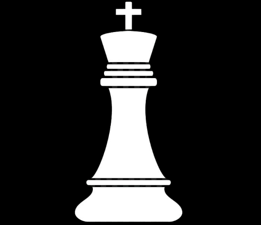
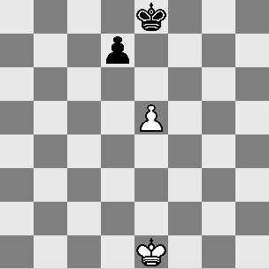

О шахматах
Идея празднования Международного дня шахмат была предложена ЮНЕСКО
(Организацией Объединённых Наций по вопросам образования, науки и культуры).
Впервые этот праздник отмечали в 1966 году, когда инициативу поддержала ФИДЕ.
Генеральная ассамблея ООН единогласно одобрила резолюцию о праздновании Международного дня шахмат в 2019 году.
В 2020 году Международный день шахмат будет отмечаться в 54-й раз подряд.

Король сочетает в себе свойства пешки и ферзя — он может перемещаться в любом направлении, но только на одно поле. Находясь на угловом поле, король атакует 3 поля, на поле у края доски — 5 полей, на остальных полях — 8 полей. При этом король, в отличие от остальных фигур, не может ходить на поле, находящееся под ударом фигуры соперника (под шах) или другого короля. Минимальное расстояние между королями обеих сторон всегда должно составлять одно поле, которое ни один из них не имеет права занимать. Это даёт возможность королю сильнейшей стороны совместно с другими фигурами объявить мат сопернику.
Король способен атаковать любую находящуюся к нему вплотную фигуру соперника, вплоть до ферзя (причём независимо от того, объявила ли эта фигура шах или нет), если занимаемое ею поле не защищено другой фигурой или королём (что сделало бы такой ход невозможным из-за угрозы шаха).
Ходы
Игра
заключается в том, что игроки поочерёдно делают ходы. Первый ход делают белые. За исключением взятия на проходе и рокировки, описанных ниже, ход заключается в том, что игрок перемещает одну из своих фигур на другое поле по следующим правилам:
- Фигуры (кроме коня) передвигаются по прямой линии, при этом все промежуточные поля между начальным и конечным должны быть свободны (на них не должно быть своих или чужих фигур). Исключением является ход коня, см. ниже.
- Ход на поле, занятое своей фигурой, невозможен.
- При ходе на поле, занятое чужой фигурой, она снимается с доски (взятие).
- Король ходит на соседнюю клетку по вертикали, горизонтали или диагонали.
- Ферзь ходит на любое расстояние по вертикали, горизонтали или диагонали.
- Ладья ходит на любое расстояние по вертикали или горизонтали.
- Слон ходит на любое расстояние по диагонали.
- Конь ходит «буквой Г»: на две клетки по вертикали и на одну клетку по горизонтали, или наоборот, на две клетки по горизонтали и на одну клетку по вертикали. Или же можно сказать так: он ходит на любую из клеток окружающего его квадрата 5х5, кроме тех, что расположены от него по вертикали, горизонтали или диагонали. При этом цвет поля, на которое ходит конь, всегда противоположен цвету поля, на котором он стоит. Конь отличается от остальных фигур также тем, что другие фигуры, стоящие пути коня, не препятствуют его ходу (он через них «перепрыгивает»).
- Пешка может ходить только вперёд (направлением «вперёд» называется направление к восьмой горизонтали для белых или к первой для чёрных): без взятия — на одно поле вперёд по вертикали, а со взятием — по диагонали на одно поле вперёд-вправо или вперёд-влево. Если пешка находится на начальном поле (вторая горизонталь для белых и седьмая для чёрных), то кроме этого, она может сделать ход без взятия на два поля вперёд. Когда пешка ходит на последнюю горизонталь (для белых — на восьмую, для чёрных — на первую), она заменяется по выбору игрока на любую другую фигуру того же цвета, кроме короля (превращение пешки). Превращение пешки является частью того хода, которым она перемещается на последнюю горизонталь. Таким образом, если, например, превращённая из пешки фигура угрожает королю противника, то этот король в результате хода пешкой на последнюю горизонталь немедленно оказывается под шахом.

Технические правила обращения с игровыми часами
- Кнопку игровых часов следует нажимать той же рукой, которой делается ход. Без этого трудно однозначно определить, что произошло раньше — ход или переключение часов.
- Игроку запрещается держать палец на кнопке часов или «зависать» над ней.
- Запрещается нажимать часы с силой, поднимать, нажимать часы, прежде чем сделан ход, или стучать по ним.
- Игрок, которому необходимо вмешательство судьи (например, регистрация ничьей из-за троекратного повторения позиции), вправе остановить часы (механические часы останавливаются путём приведения обеих кнопок в «полунажатое» состояние, которое обычно делается одной рукой, электронные — нажатием специальной кнопки). Если судья сочтёт, что претензия игрока явно необоснованна, он может наказть игрока: предупредить его, оштрафовать (при условии, что сумма штрафа объявлена заранее), уменьшить время или его результат, добавить время или очки его противнику, засчитать нарушителю поражение, удалить его из нескольких туров или из всего соревнования.
См. также: Контроль времени
См. также: Шахматные часы
Относительная стоимость фигур
|
Пешка |
Конь |
Слон |
Ладья |
Ферзь |
| Стоимость в пешках |
1 |
3 |
3 |
4 |
8 |